Сурцов Владимир Владимирович
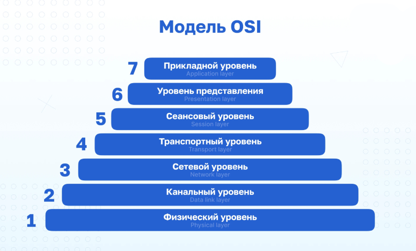
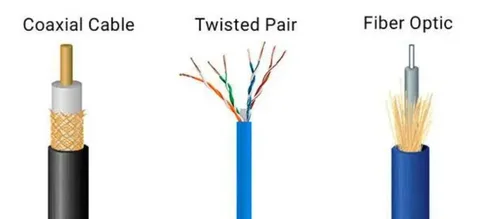
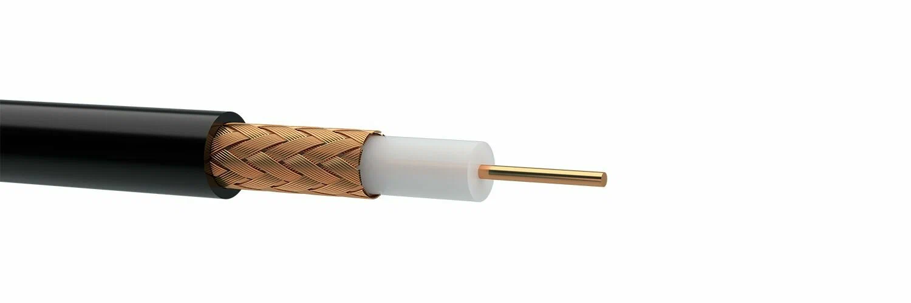
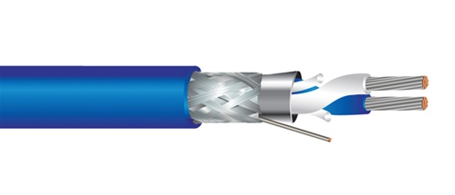
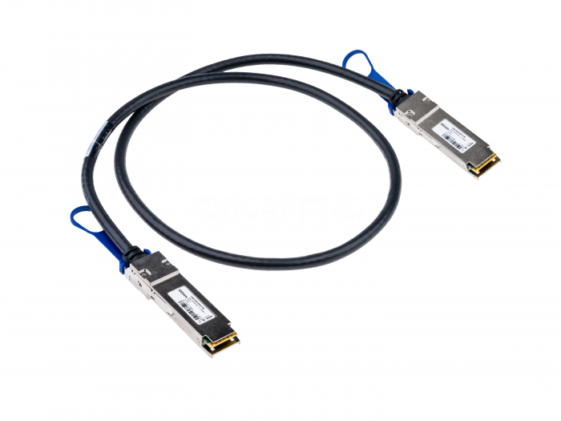
Стандарты витой пары — это совокупность спецификаций, которые определяют физические характеристики кабеля (частотный диапазон, шаг скрутки, тип экрана) и правила его монтажа. Основная классификация строится на категориях (Categories), определенных американскими стандартами TIA/EIA-568, а также международными нормами ISO/IEC 11801:2002 rev.2.
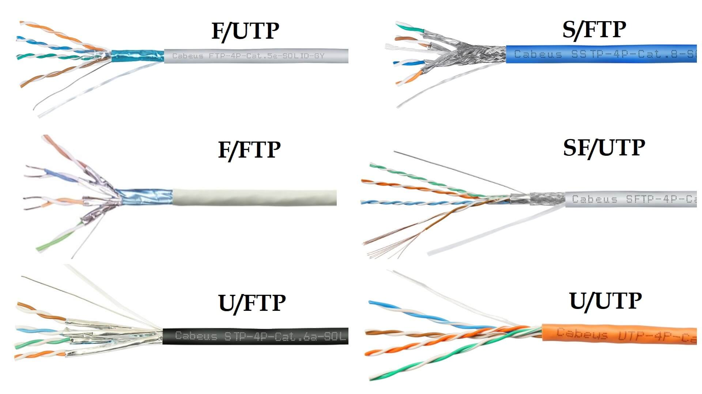
По рекомендуемому стандарту ISO/IEC 11801:2002 rev.2 предполагается, что вид внутренней структуры кабеля этого типа должен обозначаться видом XX/XXX, где слева указывается вид общего экрана, а справа вид индивидуального экрана и кабеля. Для витой пары последние две буквы всегда будут TP - twisted pair.
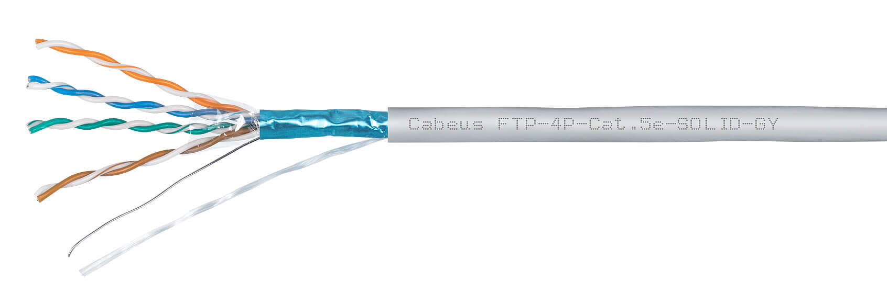
F/UTP – общий фольгированный экран (F) при неэкранированных парах (UTP).
Используется при прокладке рядом с умеренными источниками электромагнитных помех.
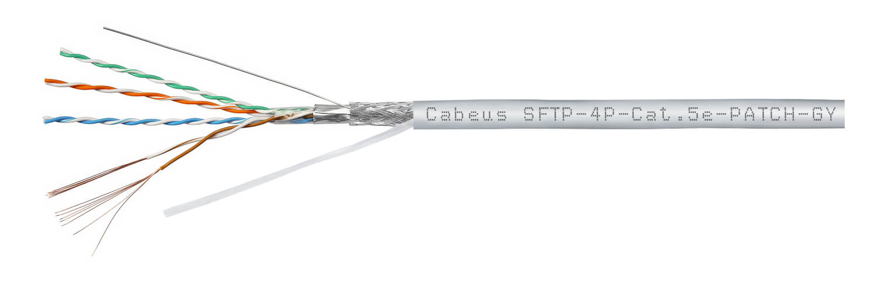
SF/UTP – общее экранирование из оплетки (S), а также общий экран из фольги (F). Но витые пары неэкранированные (UTP).
Используется при прокладке рядом с источниками достаточно мощных электромагнитных помех.
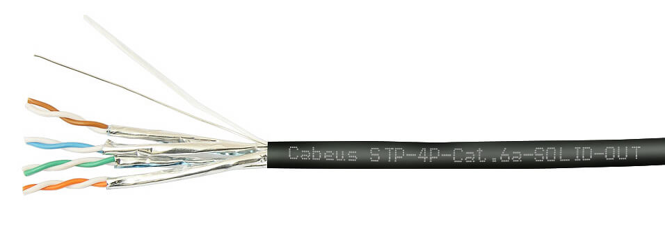
U/FTP - индивидуальное фольговое экранирование (FTP) без общей защиты.
Отличная защита между парами, снижает перекрёстные помехи. Позволяют использовать на высоких скоростях 10G+.
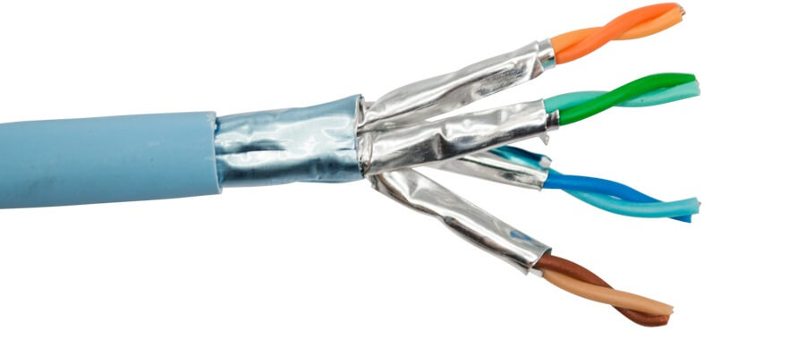
F/FTP - общая защита оплеткой (S) с индивидуальным фольговым экранированием каждой пары (FTP).
Максимальная защита от электромагнитных и перекрестных помех. Позволяют использовать на высоких скоростях 10G+ рядом с источниками электромагнитных помех.
| Категория | Скорость передачи | Частота (МГц) | Макс. длина (м) | Стандарты |
|---|---|---|---|---|
| Cat 5e | до одного Гб/с | 100 | 100 | 100BASE-TX, 1000BASE-T |
| Cat 6 | до одного Гб/с (10 Гб/с до 55м) | 250 | 55–100 | 1000BASE-T, 10GBASE-T |
| Cat 6a | до десяти Гб/с | 500 | 100 | 10GBASE-T |
| Cat 7 | до десяти Гб/с | 600 | 100 | 10GBASE-T |
| Cat 7a | до десяти Гб/с (40 Гб/с ограниченно) | 1000 | 100 | 10GBASE-T, 25G/40GBASE-T |
| Cat 8.1 | 25–40 Гбит/с | 2000 | 30 | 25GBASE-T, 40GBASE-T |
| Cat 8.2 | 25–40 Гбит/с | 2000 | 30 | 25GBASE-T, 40GBASE-T |
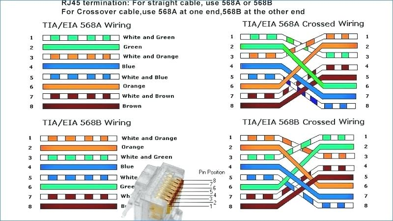
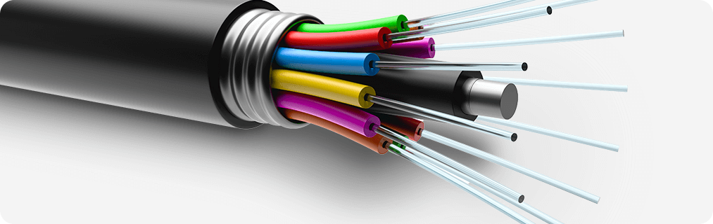
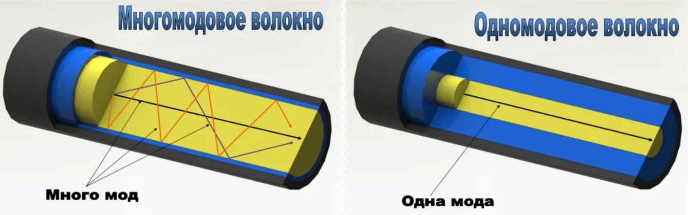
Затухание — это постепенное ослабление мощности светового сигнала по мере его распространения в среде. Оно измеряется в децибелах на километр (дБ/км).
A=10lg(Pin/Pout)
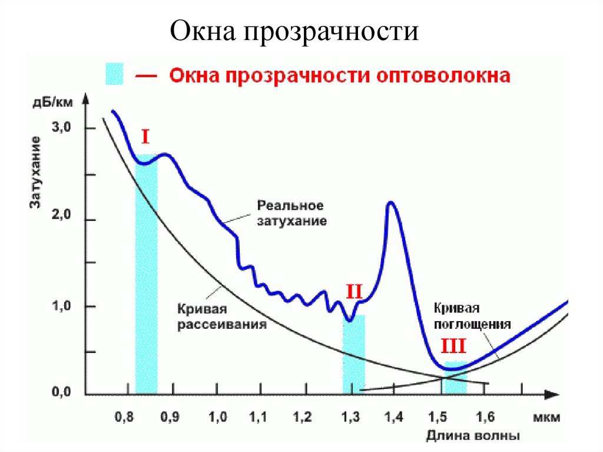
| Окно прозрачности | Длина волны (нм) | Типичное затухание (SMF, дБ/км) | Применение |
|---|---|---|---|
| Первое окно (O-band) | ~850 | 2.5 – 3.0 | Локальные сети (MMF), ЦОДы |
| Второе окно (E-band / S-band) | ~1310 | 0.35 – 0.5 | Городские сети, GPON, зоны с нулевой дисперсией |
| Третье окно (C-band) | ~1550 | 0.20 – 0.22 | Магистрали DWDM, подводные кабели, EDFA усилители |
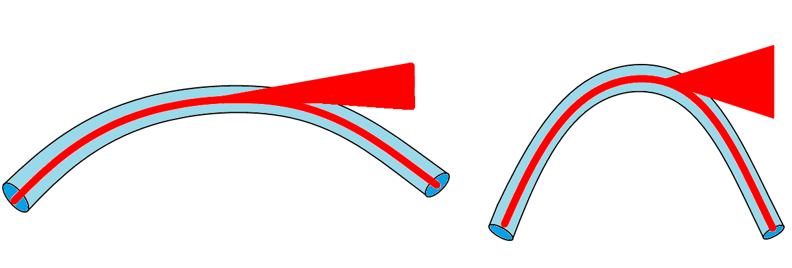
Изгиб оптического волокна — это одна из самых распространенных причин возникновения дополнительного затухания в линии связи.
Дисперсия в оптическом волокне — это физическое явление уширения световых импульсов во времени по мере их распространения. Если затухание ограничивает возможную дальность связи, то дисперсия ограничивает скорость передачи данных на такой дальности.
Если диаметр сердцевины больше длины волны, то лучи света входят под разными углами. Одни идут прямо («нулевая мода»), другие отражаются от стенок, увеличиая путь.
Она неизбежна при использовании любого источника света, кроме идеального лазера одной частоты. Свет состоит из спектра волн разной длины. Чем длиннее длина волны, тем выше скорость света в стекле.
Волокно никогда не бывает идеально круглым. Оно слегка эллиптично, имеет микроизгибы, внутренние напряжения от прокладки и температурные деформации. Из-за этой асимметрии одна поляризация распространяется чуть-чуть быстрее другой. Это называется дифференциальной групповой задержкой (DGD).
Многомодовое волокно (Multi-Mode Fiber, MMF): Имеет широкую сердцевину 50 микрон (стандарт OM2/OM3/OM4/OM5) или 62.5 микрона (устаревший стандарт OM1). Большой диаметр позволяет свету входить под разными углами и многократно отражаться от границы раздела «сердцевина-оболочка». Возникает множество путей распространения — мод. Одни идут прямо («нулевая мода»), другие многократно отражаются от стенок. Из-за этого они проходят разный путь и приходят к приемнику в разное время. Это растяжение импульса называется модовой дисперсией. Она жестко ограничивает дальность работы многомодовой оптики.
| Категория | Диаметр сердцевины (мкм) | Полоса пропускания (МГц·км @850нм) | 10GBASE-SR (дистанция) | 40/100GBASE-SR4 (дистанция) | Цвет оболочки | Статус / Применение |
|---|---|---|---|---|---|---|
| OM1 | 62.5 | 200 | ~33 метра | Не поддерживается | Оранжевый | Устаревший (старые сети, ремонт) |
| OM2 | 50 | 500 | ~82 метра | Не поддерживается | Оранжевый | Устаревший (редко используется) |
| OM3 | 50 | 2000 | до 300 метров | до 100 метров | Бирюзовый (Aqua) | Стандарт для ЦОД и корпоративных сетей |
| OM4 | 50 | 4700 | до 550 метров | до 150 метров | Бирюзовый (Aqua) или Лиловый | Оптимальный выбор для новых инсталляций |
| OM5 | 50 | 4700+ (широкополосное) | до 550 метров | до 150 метров | Лимонно-зеленый (Lime Green) | Поддержка SWDM (несколько длин волн в одном волокне) |
Сердцевина 62,5 мкм. Самый старый тип. Полоса пропускания всего 200 МГц·км. Поддерживает только 1 Гбит/с на 275 метров. Используется исключительно при ремонте старых сетей промышленных предприятий.
Сердцевина 50 мкм. Появился как попытка улучшить характеристики за счет меньшего диаметра (меньше мод — меньше дисперсия). Полоса 500 МГц·км. Поддерживает 1 Гбит/с до 550 м.
Сердцевина 50 мкм. Появился как кабель для нового на тот момент типа лазеров VCSEL (Vertical Cavity Surface Emitting Laser). Полоса пропускания всего 2000 МГц·км. Дальность: 10GBASE-SR работает до 300 метров. Это сделало его золотым стандартом ЦОДов конца 2000-х и начала 2010-х годов. Позволяет передавать 40G (SR4) и 100G (SR4) на расстояния до 100 метров.
Улучшенная версия OM3. Полоса пропускания: 4700 МГц·км. Дальность: 10GBASE-SR до 550 метров, 40/100GBASE-SR4 до 150 метров. На сегодняшний день это самый сбалансированный выбор для новых инсталляций.
Имеет ту же геометрию (50 мкм), что и OM4, но сертифицирован для работы в широком диапазоне длин волн (от 850 до 953 нм). Использование технологии SWDM (Shortwave Wavelength Division Multiplexing). По одному волокну передаются сразу 4 канала на разных цветах (например, 850, 880, 910, 940 нм).
Все современные сети строятся на рекомендациях Международного союза электросвязи (ITU-T). Буква G означает "Transmission systems and media", цифра указывает на тип волокна.
G.652 (Standard SMF / NZDSF). Подтипы: G.652.A, B, C, D. Главное различие между ними — подавление «водяного пика» (поглощение на длине волны 1383 нм). G.652.D (соответствует маркировке OS2): Водяной пик устранен. Волокно прозрачно во всем диапазоне от 1260 до 1625 нм. Это позволяет использовать технологию грубого спектрального уплотнения (CWDM) прямо по этому кабелю. Дисперсия: Нулевая точка хроматической дисперсии находится на 1310 нм. На 1550 нм дисперсия положительная (~17 пс/нм·км).
G.657 (Bend-Insensitive — Устойчивое к изгибам). Разработано для сетей доступа FTTH (оптика в квартиру) и прокладки внутри зданий. Имеет специальный отражающий слой («туннель») вокруг сердцевины. Когда свет пытается выйти из волокна через резкий изгиб, этот слой отражает его обратно в центр. Допускает радиус изгиба до 5–7.5 мм (можно завязать узлом, и связь не пропадет). Обычное G.652 начинает терять сигнал уже при радиусе 30 мм.
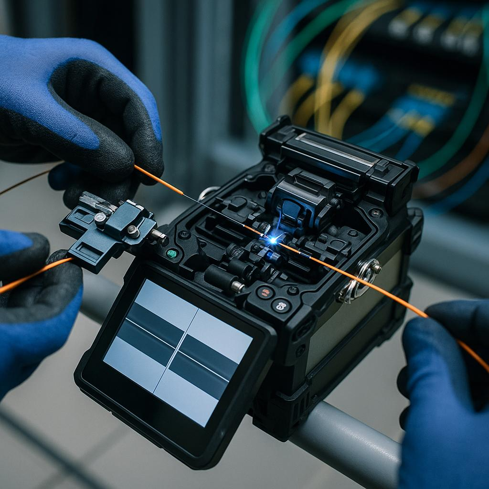
Сварка оптического волокна — это процесс создания неразъемного соединения двух стеклянных нитей путем их локального расплавления электрической дугой. Это «золотой стандарт» монтажа магистральных и распределительных сетей, так как обеспечивает минимальные потери сигнала.
Потери на сварке (Insertion Loss): Современные автоматические аппараты обеспечивают затухание на уровне 0.01–0.03 дБ.
Обратное отражение (ORL): При качественной сварке френелевское отражение отсутствует, что критично для работы мощных лазерных передатчиков в системах DWDM.
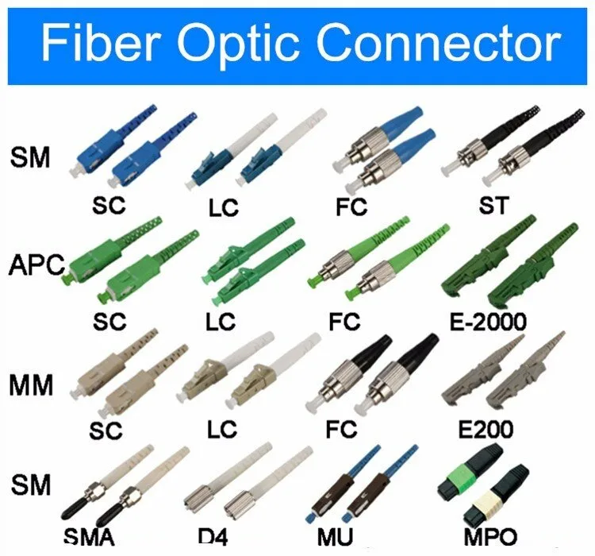
Оптический коннектор — это механическое устройство, предназначенное для стыковки двух оптических волокон с минимальными потерями сигнала. Основная задача коннектора — точно совместить сердцевины волокон (диаметром всего 9 мкм для одномода) и обеспечить их плотное прилегание.
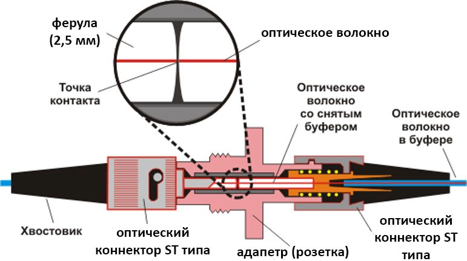
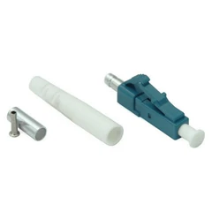
Конструкция: Маленький прямоугольный корпус с защелкой, аналогичной Ethernet-разъему RJ-45. Феррула (наконечник) диаметром 1.25 мм. Применение: Современный стандарт де-факто. Используется практически во всех трансиверах SFP/SFP+/QSFP28/OSFP, патч-панелях дата-центров и активном оборудовании.
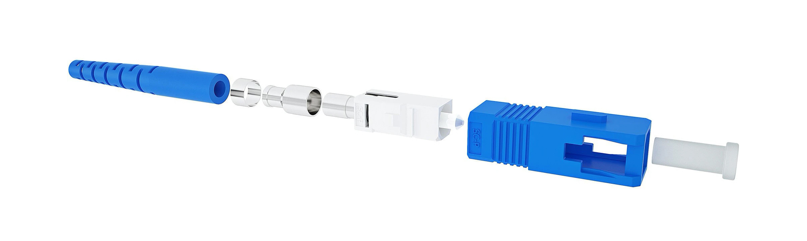
Конструкция: Прямоугольный корпус push-pull («вставил до щелчка — вытянул»). Феррула 2.5 мм. Применение: Долгое время был основным в телекоме и PON-сетях (GPON). До сих пор массово используется в магистральных кабельных системах зданий (indoor/outdoor).
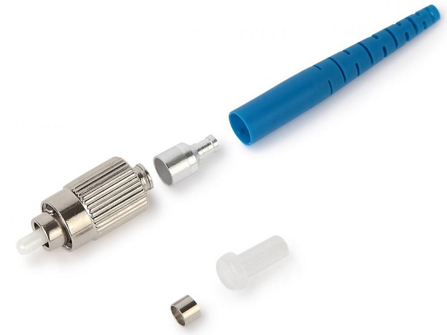
Конструкция: Круглый металлический корпус с резьбовым соединением. Применение: Лабораторное оборудование, измерительные приборы (рефлектометры OTDR), старые системы DWDM.
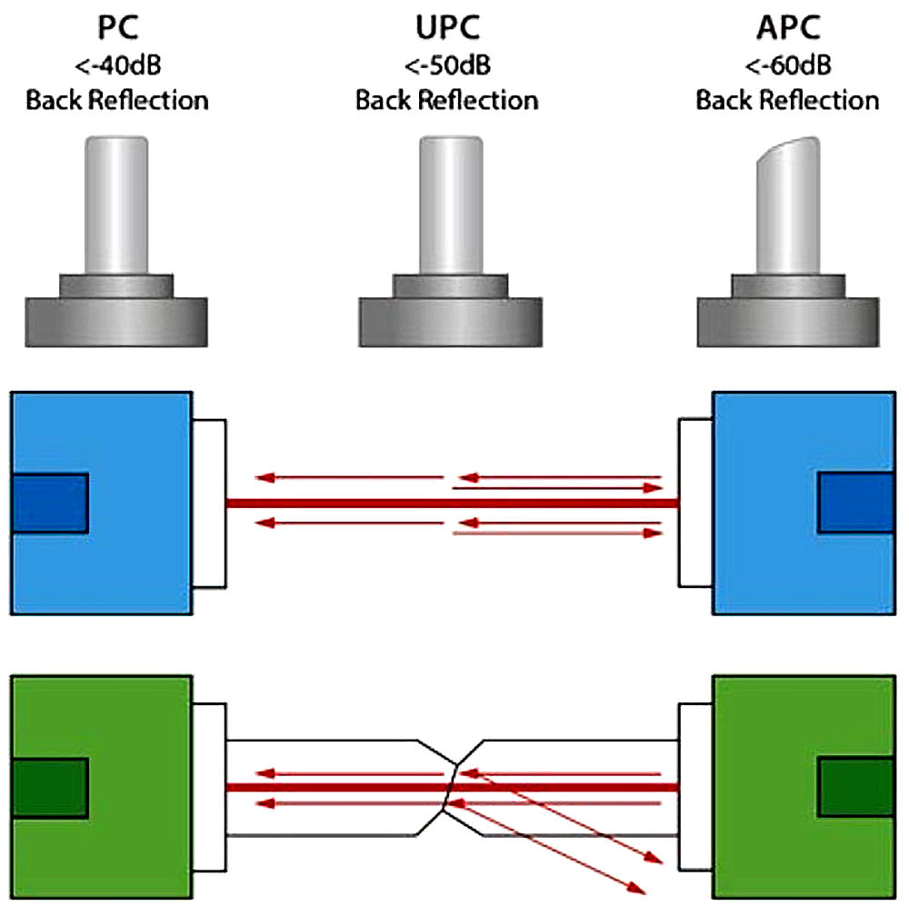